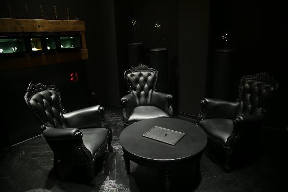
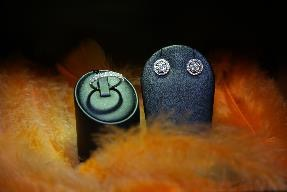
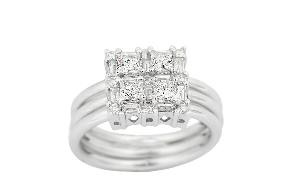
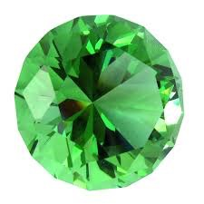
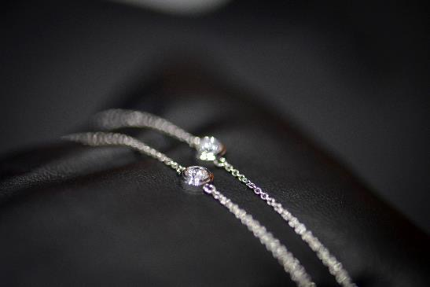
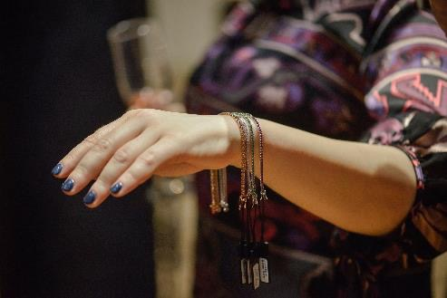
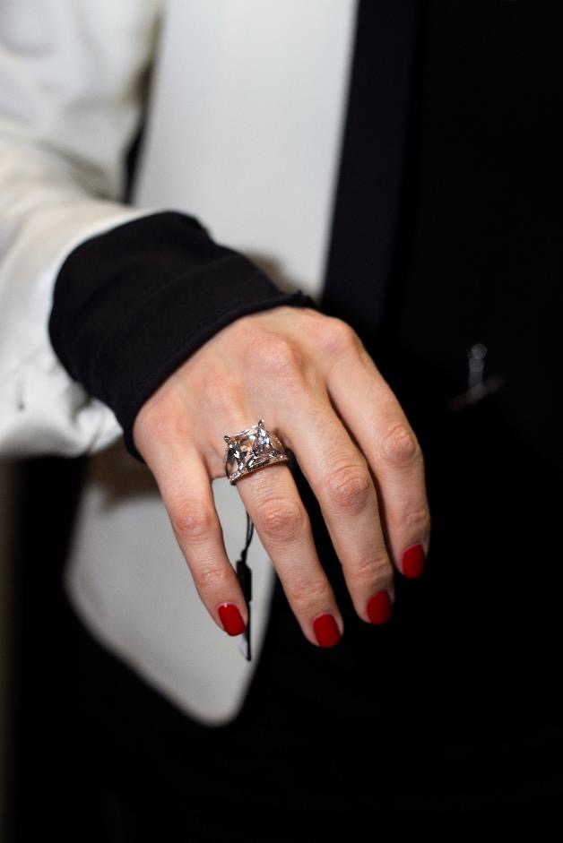

Alegerea diamantului perfect
Pentru majoritatea oamenilor, alegerea unei bjuterii reprezintă o experienţă nouă. Dar asta nu înseamnă că trebuie să fie o experienţă copleşitoare. E simplu să înţelegi trăsăturile şi calitatea unui diamant.
Educaţia oferită de noi în domeniul diamantelor este gândită astfel încât să răspundă tuturor întrebărilor pe care le-ai putea avea. Explică trăsăturile unui diamant, cum aceste caracteristici îi influenţează aspectul, care sunt mai importante şi care mai puţin importante. În numai câteva minute, vei ştii tot ceea ce ai nevoie pentru a găsi diamantul perfect.

FORMA DIAMANTELOR
Din moment ce există diferenţe foarte mari între formele diamantelor, calitatea pietrei este determinată de caracteristici unice în funcţie de formă. Alege, mai jos, forma pentru a învăţa cum să recunoşti cel mai frumos diamant. Dacă ai alte întrebări, contactează unul dintre consultanţii noştri în diamante şi bijuterii, care te pot ajuta să găseşti diamantul perfect pentru tine.

Rotund
Briliantul rotund este de departe cea mai populară şi mai bine documentată formă de tăiere a diamantelor. De aproape 100 de ani, tăietorii de diamante au utilizat teorii avansate privind comportamentul luminii şi calcule matematice precise pentru a optimiza "focul" şi strălucirea diamantului rotund.
Pentru a maximiza brilianţa diamantului rotund tradiţional, alege una dintre cele două grade superioare de tăiere, ideal sau foarte bun, şi selectează şlefuire ideală, excelentă sau foarte bună, la fel în cazul simetriei.
Princess
Acesta este cel mai popular diamant non-rotund. Strălucirea superbă şi tăietura unică îl fac ideal pentru inelele de logodnă. De asemenea, diamantele princess pot varia mult în funcţie de formă, fie ea pătrată sau dreptunghiulară.
Emerald
Ceea ce face această formă specială este pavilionul, tăiat cu faţete rectangulare pentru a crea o impresie optică unică. Datorită platoului mare, deschis, această formă pune în valoare claritatea diamantului.
Asscher
Acest diamant de o frumuseţe unică este aproape identic cu smaraldul, cu excepţia faptului că este pătrat. Are de asemenea un pavilion tăiat cu faţete rectangulare în acelaşi stil ca forma emerald.
Marquise
Forma diamantului Marquise poate maximiza greutatea în carate, ceea ce îl face să arate mult mai mare. Acest diamant cu tăietură briliantă arată superb atunci când este înconjurat cu pietre rotunde sau în formă de pară, iar lungimea diamantului Marquise oferă degetelor un aspect lung şi suplu.
Oval
Ovalul are o strălucire superbă, similară cu a diamantului rotund. Diamantele ovale sunt foarte populare deoarece lungimea lor poate pune în valoare degele lungi şi suple.
Radiant
Colţurile netezite reprezintă caracteristica unică acestui diamant şi fac din tăietura radiant o opţiune populară şi versatilă pentru bijuterii. Tăietura radiant arată la fel de frumos lângă pietre baghetă sau rotunde. Diamantele tăiate radiant pot fi de diverse forme rectangulare.
Pear
Acest diamant cu tăietură briliantă este numit de asemenea "lacrimă" pentru vârful singular şi capătul rotunjit. Aspectul unic al formei de pară fac din acest diamant o variantă populară pentru diverse bijuterii. Dacă alegi o formă de pară alungită, lungimea diamantului creează un efect subtil de subţiere a degetului care îl poartă.
Heart
Inima este simbolul suprem al dragostei. Datorită aspectului unic, diamantul în formă de inimă îl face o opţiune distinsă pentru diferite tipuri de bijuterii.
Cushion
Această formă unică este populară de mai mult de un secol. Diamantele cu tăietură cushion (cunoscute şi ca diamante tăiate în formă de pernă) au colţuri rotunjite şi faţele mari, care le pun în valoare strălucirea.
Diamond clarity

Claritatea măsoară numărul şi mărimea micilor defecte care apar în aproape toate diamantele. Multe dintre aceste imperfecţiuni sunt microscopice şi nu afectează vizibil frumuseţea unui diamant.
De regulă, se acordă o importanţă seminficativă clarităţii unui diamant, însă dintre "cei patru C" este cel mai lesne de înţeles şi, potrivit multor experţi, are de regulă cel mai mic impact asupra aspectului unui diamant.
Claritatea se referă pur şi simplu la imperceţiunile minuscule, naturale care apar în aproape toate diamantele, cu excepţia celor mai exclusive. Experţii în diamante se referă la aceste defecte prin mai multe denominări tehnice, inclusiv, printre altele, pete sau închideri. Diamantele cu cele mai rare şi mai mici imperfecţiuni primesc cele mai ridicate calificative de claritate. Deoarece aceste defecte tind să fie microscopice, de obicei nu afectează vizibil frumuseţea unui diamant.
Ce grad de calitate este potrivit pentru tine?
Diamantul "eye-clean" este unul care nu are imperfecţiuni vizibile prin coroană cu ochiul liber. Excelent în ceea ce priveşte preţul, diamantele cu acest grad de claritate sunt mult mai puţin scumpe decât cele "flawless" (FL) sau "internally flawless" (IF), extrem de rare şi cu preţuri mult mai ridicate.
De multe ori, imperfecţiunile din diamantele calificate drept "slightly included" (SI) nu sunt vizibile cu ochiul liber, ceea ce le face de asemenea atractive ca preţ. Dacă iei în calcul un diamant cu calificativul de calitate SI, întreabă un consultant în diamante şi bijuterii, care va evalua diamantul pentru a te asigura că imperfecţiunile nu sunt vizibile cu ochiul liber.

Culoarea
Culoarea se referă de fapt la lipsa culorii unui diamant, evaluarea realizându-se după cât de alb este un diamant.
Un grad de culoare D este cea mai mare posibil, în timp ce Z este cel mai mic.
Grade de culoare:
Z-N Colorare vizibilă
M-K Colorare vizibilă
J-I Aproape incolor. O valoare excepțională cu un ton ușor detectabil.
H-G Aproape incolor. Culoare dificil de detectat, cu excepția cazului în care se compară cu un diamant de calitate superioară. O valoare excelentă.
F-E Incolor. Pot fi detectate urme de culoare doar de către un expert. Un diamant rar.
D Incolor absolut. Cel mai înalt grad, un diamant extrem de rar.
Culoarea unui diamant este galben pal, de aceea gradul culorii unui diamant este stabilit pe lipsa lui de culoare, Cu cât mai puți este colorat un diamant, cu atât mai mare este gradul de culoare. După tăietură, culoarea este considerată a doua cea mai importantă caracteristică în alegerea unui diamant. Acest lucru se datorează faptului că ochiul uman are tendința de a detecta în primul rând scânteia (performanță lumina) unui diamant, și abia apoi culoarea.
GREUTATEA DIAMANTELOR (carate)

Carata este o unitate de măsură a greutăţii unui diamant, dar de regulă nu poate reflecta cu precizie mărimea unui diamant.
Înclinăm să evaluăm mărimea unui diamant privindu-l de sus, deoarece aşa ne sunt prezentate atunci când sunt încastrate într-un inel.
Pentru a înţelege mărimea unui diamant, greutatea în carate trebuie luată în calcul împreună cu alte două criterii:
Distanţa transversală în milimetri a părţii de sus a diamantului.
Calitatea tăieturii diamantului.
După cum sugerează denumirea, greutatea totală carate se referă la greutatea unui diamant. Cu toate acestea, aşa cum greutatea unei persoane nu este corelată neapărat cu înălţimea, greutatea în carate nu reflectă, de una singură, mărimea unui diamant. Pentru a înţelege cu rigurozitate mărimea unui diamant, recomandăm să iei în calcul greutatea totală carate împreună cu alte două caracteristici: 1) distanţa transversală în milimetri a părţii superioare a diamantului, şi 2) calitatea tăieturii diamantului.
Distanţa transversală a părţii de sus a diamantului este importantă deoarece este latura cea mai vizibilă atunci când piatra este încastrată într-un inel.
Calitatea tăieturii diamantului trebuie luată în calcul deoarece, atunci când un diamant este tăiat la proporţiile corecte, cantitatea maximă de lumină (scânteiere, scăpărare) este reflectată pe partea de sus a diamantului. Astfel, atunci când un diamant este bine tăiat, lumina reflectată de partea superioară îl face să pară mai mare. În plus, o bună parte din masa unui diamant prost tăiat va fi obturată la baza pietrei, ceea ce îl va face să pară mai mic decât ar sugera greutatea în carate.
Astfel, este posibil să ai de-a face cu un diamant cu o greutate în carate mai mică, însă o tăietură mai de calitate, care să pară mai mare decât un diamant cu o greutate în carate mai mare, însă cu o tăietură mai slabă calitativ.
Odată ce ai ales tăietura preferată, culoarea şi calitatea tăieturii, este uşor să determini ce greutate în carate se va încadra în bugetul tău.
Pentru a alege cea mai bună greutate în carate a unui diamant, ia în calcul şi mărimea degetului, mărimea bijuteriei în care îl vei incastra, dar şi bugetul pe care îl ai la dispoziţie.